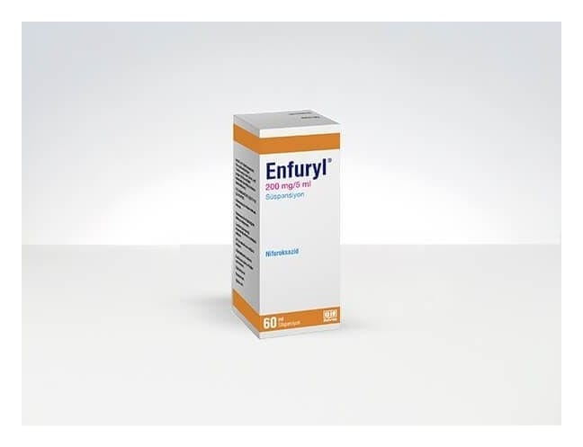

Enfuryl 200 mg/5 ml Süspansiyon, 60 ml

Ne için kullanılır
KT · Bölüm 1ENFURYL, nifuroksazid etkin maddesini içerir. Ağızdan alınacak süspansiyon formundadır. 1 ölçek (5 ml) içinde 200 mg etkin madde bulunur. 60 ml sarı renkli solüsyon içeren şişede kullanıma sunulmuştur.
ENFURYL
bölgesel (lokal) etkili bir barsak antiseptiğidir. Genel durum bozukluğu, ateş, enfeksiyon veya zehirlenme belirtilerinin görülmediği bakteriyel kökenli olduğu düşünülen akut ishal tedavisinde, su kaybının giderilmesine ek olarak kullanılır
Su kaybının derecesi ve uygulama yolu (ağızdan veya damardan), ishalin şiddetine ve yaşınıza ile durumunuza (eşlik eden hastalıklar vs.) bağlı olarak değişir.